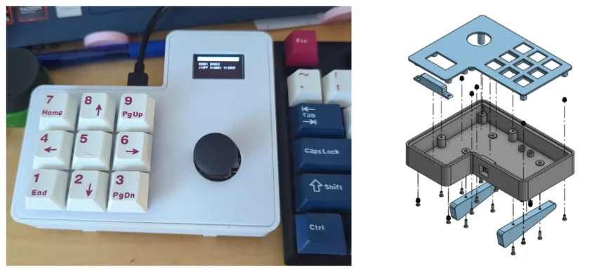
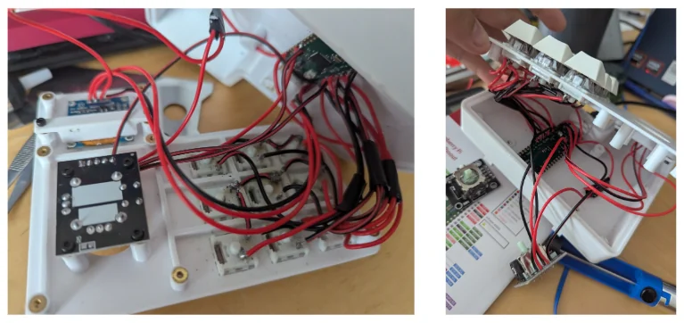

Custom 9-Key Hardware Macropad
Modelled and coded a custom 9-key mechanical macropad with an integrated OLED display and analog joystick. The device functions as a hardware-level 'Rubber Ducky'. Multi-character macros are sent with the USB HID (human interface device) protocol (as if it were a regular keyboard) from the Raspberry Pi Pico microcontroller without relying on host-side software like AutoHotkey.

1. Hardware and HID Constraints
Commercial macropads frequently rely on host-side listener software to intercept arbitrary function keys (e.g., F13-F24) and execute macros on the operating system level. I wanted this macropad to work on any device, so to eliminate software dependencies, this macropad handles all macro strings entirely on-device, functioning as a keyboard. I currently use this macropad to type in frequently used file paths and ssh key locations.
Bottleneck: Operating strictly over USB HID results in a bottleneck tied to USB polling rates. Because HID devices cannot inject clipboard paste commands for security reasons, long macros must be typed out sequentially, character-by-character, within the polling cycle. Although this is not perfect, it is still signicantly faster than I would be able to type.
2. Firmware Execution Logic
The C++ firmware manages 81 distinct macro assignments across 9 mode profiles. Each profile and key press is displayed on the OLED screen in case I've forgotten what a key for a profile does. Currently, I am only using 12 of the keys, so the 81 macro assignments allows for a lot of customization in the future. .
Firmware Customization
The device is programmed by editing the MACRO_STRINGS[9][9] array in the source code. This 2D array stores 9 preset modes, each containing 9 macro strings corresponding to the physical keys. For example:
const char* MACRO_STRINGS[9][9] = {
// Profile 0 (Example: Git Workflow)
{
"git status\n", "git add .\n", "git commit -m \"Update\"\n",
"git push\n", "git pull\n", "clear\n",
"", "", ""
},
// ...
};Inserting a \n triggers the enter key, while an empty string "" leaves the key unassigned. When an unused key is pressed, the OLED screen displays "UNASSIGNED KEY" when it receives no command.
- Key Matrices vs Direct GPIO: Standard keyboards utilize a diode matrix to multiplex switch reads. Because this design only requires 9 switches and the RP2040 has 26 (about 8 of them are used for the OLED screen and joystick as well), the switches are wired directly to ground. This greatly simplifies the macropad wiring.
- Chord Inputs: Mode switching and hardware configuration are executed via simultaneous 3-key chords. The top three horizontal keys trigger a recalibration of the joystick, the middle three turn the joystick off or on, the bottom allows the user to change the profile. Finally, the three on the right side of the macropad reboots the microcontroller into BOOTSEL mode so it is able to be reflashed without needing to open the macropad case to press the physical button.
3. Pinout and Schematics

| Component | Module Pin | Pico GPIO | Routing Note |
|---|---|---|---|
| OLED Display (I2C0) | SDA / SCL | GP0 / GP1 | 3V3 Logic |
| Analog Joystick | VRx / VRy | GP26 / GP27 | Must use ADC capable pins. Do not route to 5V VBUS. |
| Mechanical Switches | Terminals | GP3-GP11 | Daisy chained common ground (no diode matrix). |
4. Bill of Materials
The total prorated cost of the assembly was held strictly under $20.
| Component | Prorated Cost |
|---|---|
| Raspberry Pi Pico (RP2040) | $5.00 |
| 9x Mechanical MX Switches | $1.98 |
| 0.96" 128x64 I2C OLED (SSD1306) | $3.00 |
| Analog Joystick Module | $3.00 |
| PLA Filament (96g) and Wiring | $4.63 |
5. Troubleshooting Guide
- Keys not mapped properly: If multiple keys send commands incorrectly, remap the GPIO pins to the key switches in software via the
KEY_PINSarray rather than re-soldering. - Joystick voltage drops: If the analog stick loses calibration or drifts, it indicates poor voltage transfer. Reseat or reflow the soldered connections on the 3V3 line.
- Case fitting issues: Excessive wire length prevents chassis closure. Wires should be cut short, grouped by row, and taped flat against the bottom plate to avoid interfering with the M2 standoffs.
- USB port alignment: The 3D-printed case overhangs the Pico's micro-USB port. Use a knife to trim the plastic overhang for clearance.